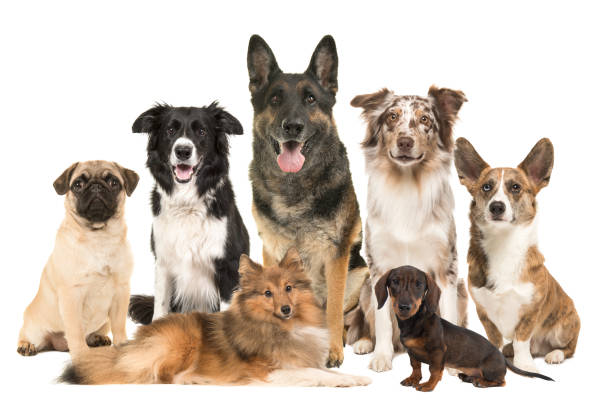
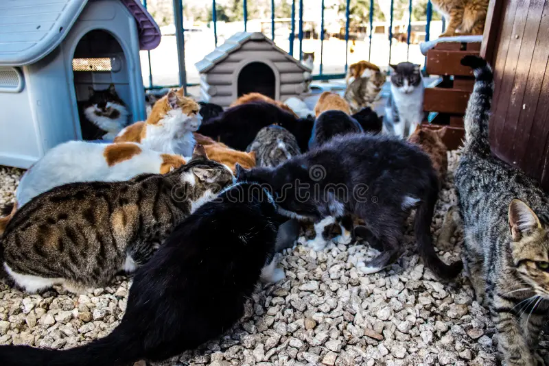

Suntem o organizație formată din oameni care iubesc animalele și își dedică timpul pentru a le oferi o viață mai bună. Ne ocupăm de salvarea și îngrijirea animalelor abandonate, oferindu-le hrană, adăpost, tratamente medicale și, atunci când este nevoie, intervenții veterinare de urgență.
Scopul nostru este să găsim pentru fiecare animal familia potrivită, un cămin permanent în care să primească afecțiune, siguranță și respect. Credem cu tărie că fiecare animal merită o a doua șansă, indiferent prin ce a trecut.
Ne ghidăm după principii de empatie, responsabilitate și respect pentru toate ființele. Credem că fiecare gest contează și că educația comunității este la fel de importantă ca și salvarea animalelor.


Suntem voluntari, iubitori de animale și persoane dedicate, care lucrează împreună pentru a oferi sprijin, îngrijire și un mediu sigur pentru fiecare patruped. Fiecare membru al echipei aduce pasiune, răbdare și grijă în munca noastră zilnică
De-a lungul timpului, am ajutat numeroase animale să-și găsească familii iubitoare. Fiecare adopție reușită, fiecare animal salvat sau fiecare zi de voluntariat ne arată că misiunea noastră contează.
Oricine poate contribui la misiunea noastră: prin adopție responsabilă, voluntariat, donații sau chiar distribuirea poveștilor animalelor. Chiar și un gest mic poate schimba viața unui animal.